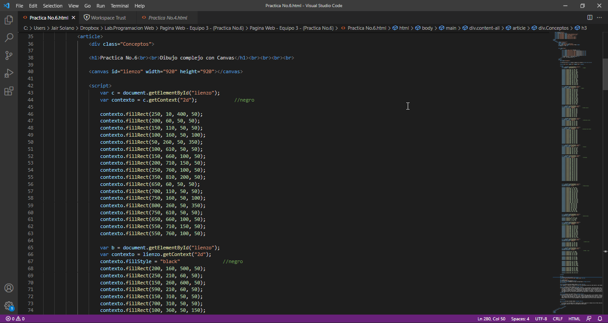
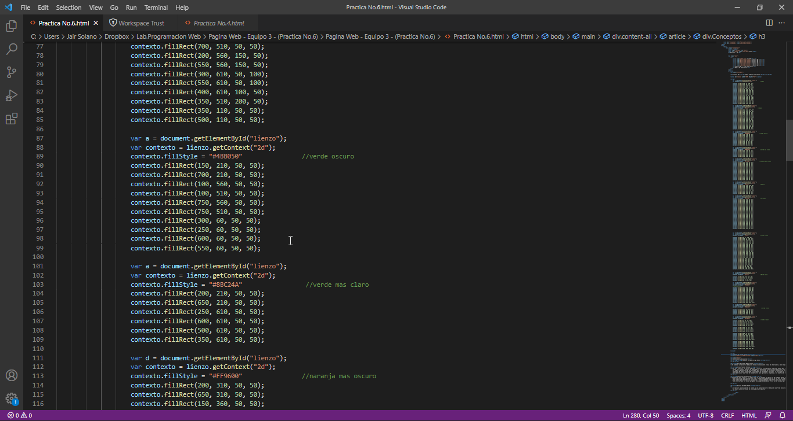
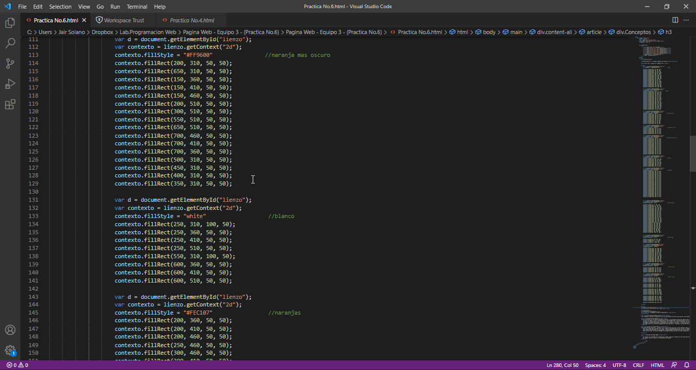
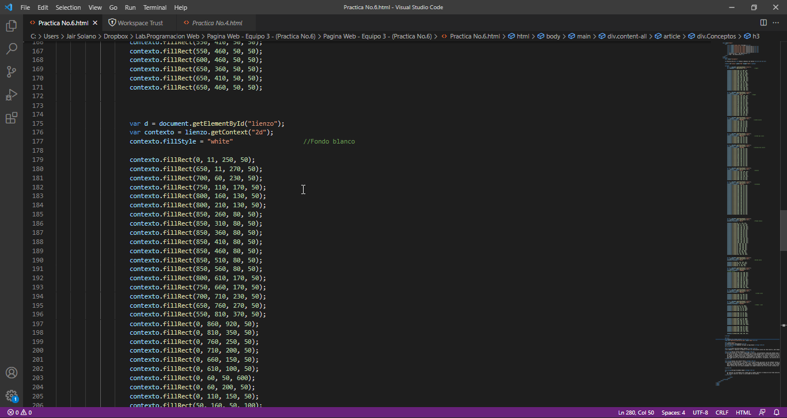
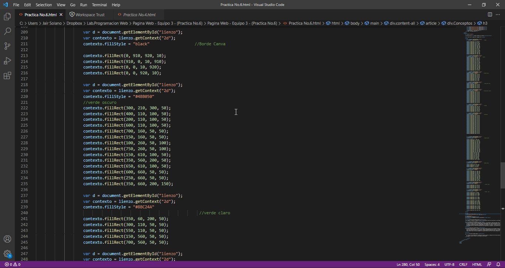
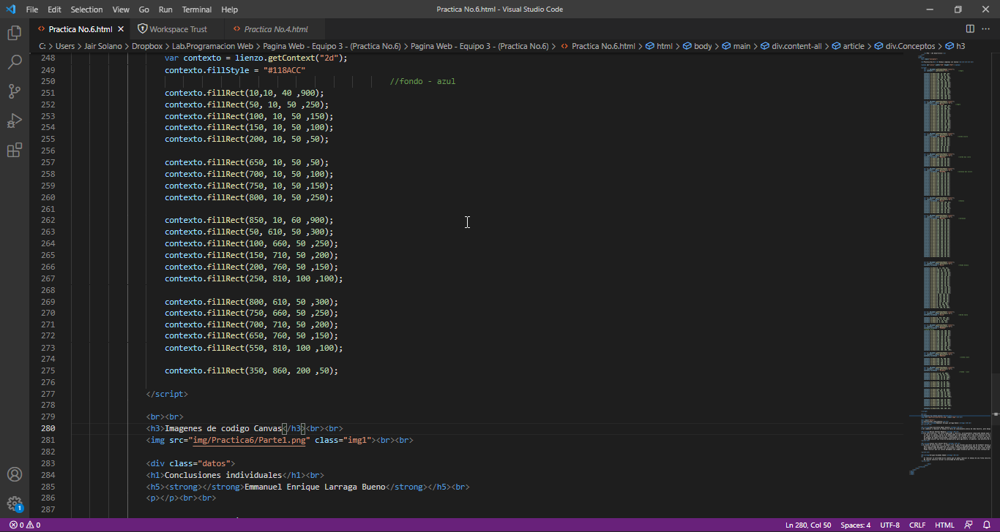

Practica No.6
Dibujo complejo con Canvas
Imagenes de codigo Canvas






Conclusiones individuales
Emmanuel Enrique Larraga Bueno
En conclusion esta practica me ayudo a nuevamente progunfizar mis conocimientos en cuestion de como funcionan o como se manejan las posiciones y organizacion de una pagina web, ya sea para la formacion de dibujos como triangulos, pixel art, formas o dibujos mas complejos e incluso animaciones que por si solas con mas complejas que un dibujo estatico, pero en si la programacion con las etiquetas canvas me ayudo a darme una idea de como funcionan dichas etiquetas.
Alan Guillermo Ramos Zavala
Al comenzar a realizar el dibujo no tenía un conocimiento previo de cómo hacerlo, pero después de investigar y practicar un poco me resulto un poco fácil, ya que los cuadros que debía de poner para formar el contorno del dibujo a veces se repetían las coordenadas, solo fue cuestión de entenderle mejor. Creo que es una gran herramienta la cual puede ayudar a que una página se vea mejor con este tipo de métodos.
Adrian Fuentes Mendoza
Tras esta practica, fue entre complicado y sencillo, principalmente complicado debido aque no sabía utilizar lo que es el canvas, nunca se me habia dado la oportunidad, pero tras esta practica al utilizarlo, al comienzo fue complicado por saber la declaracion de las variables para los colores en el lienzo y encontrar las coordenadas correctas para realizar el dibujo ya despues de seguir practicando, sinseramente se me empezó a facilitar, lo unico que doy a pensar es que lo siento tardado pero debe existir una forma de automatizarlo para agilizarlo, en general, una practica de mucha utilidad.
Isaias Jair Solano Peral
A traves de esta practica , la numero 7 en la que tuvimos que hacer uso de elemento Canvas para crear una ilustracion o dibujo. Para ello tuvimos que consultar los links, fuentes o documentacion que se nos dio. La elaboracion del dibujo fue algo laboriosa al tener que trabajar con coordenadas y acomodar cada elemento del dibujo, pero poco a poco adquirimos cierta practica. De forma personal pude aprender a usar de forma basica el elemento Canvas de forma basica pero tambien pude entender las variaciones o flexibilidad que puede tener para crear diversar formas y estilos como rectangulos, circulos, lineas, flechas con colores ,contornos, degradados entre otros. Puedo concluir que con canvas agregamos una imagen dinamica que ofrece varias ventajas por que la podemos modificar en tiempo real cuando la creamos.
Enrique Escobedo Adame
Al realizar la actividad me di cuenta que se podia realizar el dibujo de una forma sencilla entendiendo la manera en la que esta acomodado el diseño, se manejo po medio de coordenadas y dimenciones de la cuandricula para poder realizar dicho diseño. Me resulto sencillo ralizar la actividad de esta manera.